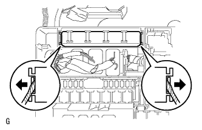
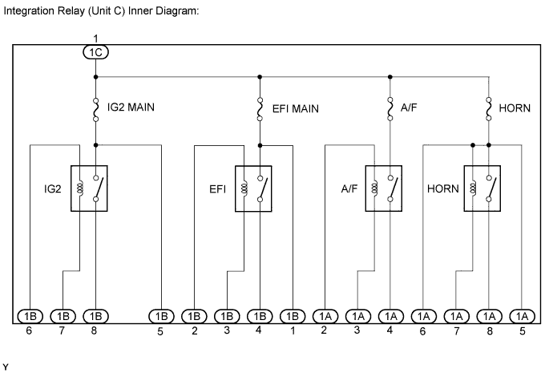
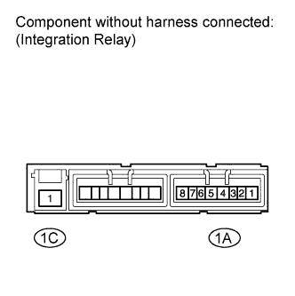

HORN RELAY > ON-VEHICLE INSPECTION |
| 1. DISCONNECT CABLE FROM NEGATIVE BATTERY TERMINAL |
| 2. REMOVE INTEGRATION RELAY (UNIT C) |
Remove the engine room relay block cover.
 |
Using a screwdriver, detach the 2 claws and disconnect the integration relay from the engine room relay block.
Disconnect the 3 connectors.
| 3. INSPECT INTEGRATION RELAY (HORN RELAY) |

Measure the resistance of the HORN fuse.
Measure the resistance according to the value(s) in the table below.
| Tester Connection | Condition | Specified Condition |
| HORN fuse | Always | Below 1 Ω |
 |
Measure the resistance of the horn relay circuit.
Measure the resistance according to the value(s) in the table below.
| Tester Connection | Condition | Specified Condition |
| 1A-8 - 1C-1 | When battery voltage is not applied between 1A-7 and 1C-1 | 10 kΩ or higher |
| When battery voltage is applied between 1A-7 and 1C-1 | Below 1 Ω |
| 4. INSTALL INTEGRATION RELAY (UNIT C) |
Connect the 3 connectors.
Install the integration relay to the engine room relay block.
Install the engine room relay block cover.
| 5. CONNECT CABLE TO NEGATIVE BATTERY TERMINAL |